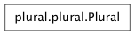

Return the English plural form for a number.
Plural forms in English are the singular with an ‘s’ appended, or the plural form.
Base class to return the plural form of a number. Sub-classed for specific languages.
Return the dual form for a number. (In this default class, it is just the singular form if a plural form isn’t specified).
Return the indefinite article for this noun (i.e. a or an).
Actually, returns ‘’ or ‘n”, as this allows format strings to be written as “a{n}”.
Return the multiple form for a number. (In this default class, it is just the dual form).
Return the appropriate singular/plural form.
Note the special case. If singular is blank, always return blank.
Return the singular form for a number.